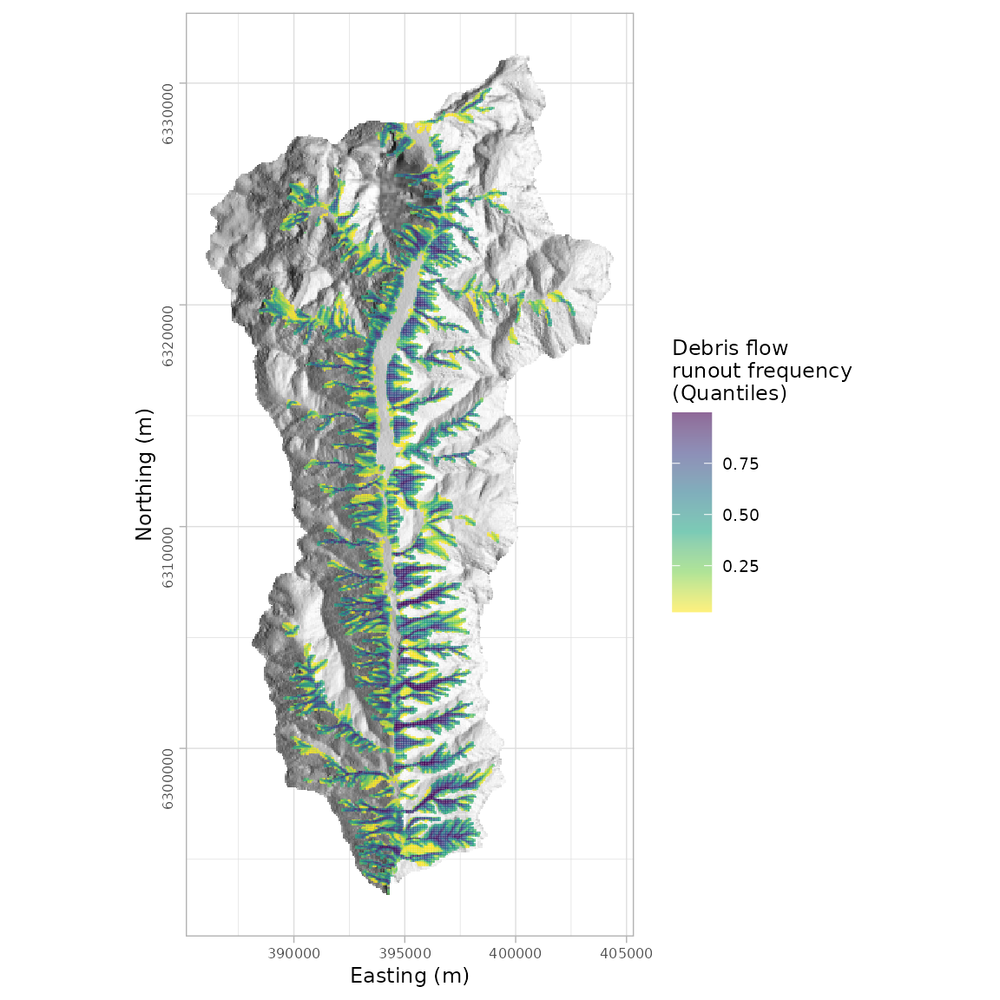

gpp_rw_pcm_apply_regionally.RmdThe runoptGPP package was developed for automatic parameter selection for single event and regional runout modeling using the random walk and PCM components of the Gravitational Process Path (GPP) Model tool in SAGA-GIS. The optimization procedure uses a two-stage approach, where we first optimize the random walk model to find the ‘best’ simulation of runout path, and then plug-in these values to the PCM model to optimize for runout distance. The performance of the runout path is based on the area under the receiver operating characteristic curve (AUROC), and runout distance is based on a measure of relative error.
This vignette
In this example, we apply an optimized runout model to a sub catchment of our study area. First, the required packages and data are loaded, data is cropped by a sub catchment boundary, and we create a hillshade model for improving visualization of our results.
library(runoptGPP) library(raster) library(rgdal) library(Rsagacmd) library(ggplot2) # Plotting maps library(patchwork) # Tile multiple maps together library(ggnewscale) # Allow multiple scales in a map # Initiate a SAGA-GIS geoprocessing object saga <- saga_gis(opt_lib = "sim_geomorphology") # Load shapefile of sub catchment polygons sub_catchments <- readOGR("sub_catchments.shp")
#> OGR data source with driver: ESRI Shapefile
#> Source: "/home/jason/Data/Chile/sub_catchments.shp", layer: "sub_catchments"
#> with 58 features
#> It has 15 fields
#> Integer64 fields read as strings: OBJECTID ID No elev_min elev_max elev_media elev_rango pend_min pend_max pend_media pend_rango Seleccion# Load and crop DEM for a single sub catchment dem <- raster("elev_alos_12_5m.tif") dem <- crop(dem, sub_catchments[sub_catchments$ID == 56,]) dem <- mask(dem, sub_catchments[sub_catchments$ID == 56,]) # Load and crop source area prediction raster source_pred <- raster("source_pred_gam.tif") source_pred <- crop(source_pred, sub_catchments[sub_catchments$ID == 56,]) source_pred <- mask(source_pred, sub_catchments[sub_catchments$ID == 56,]) # For visualization make a hillshade model from the DEM slope <- terrain(dem, opt='slope') aspect <- terrain(dem, opt='aspect') hillshade <- hillShade(slope, aspect, angle=40, direction=270)
We need to define a probability threshold to classify a source area prediction grid cell (values range from 0 to 1) as a source area.
# Aggregate data for quicker mapping hillshade_agg <- aggregate(hillshade, fact = 5, fun = mean) source_agg <- aggregate(source_pred, fact = 5, fun = mean) # Transform raster data into a data frame for use with ggplot hillshade_df <- as.data.frame(hillshade_agg, xy = TRUE) hillshade_df <- hillshade_df[!is.na(hillshade_df[,3]),] source_df <- as.data.frame(source_agg, xy = TRUE) source_df <- source_df[!is.na(source_df[,3]),] names(source_df) <- c("x", "y", "pred") # Create source area prediction map map.srcpred <- ggplot() + geom_tile(data=hillshade_df, aes(x=x, y=y, fill = layer), show.legend = FALSE) + scale_fill_gradient(high = "white", low = "black", na.value = "#FFFFFF") + new_scale("fill") + geom_tile(data=source_df, aes(x=x, y=y, fill = pred) ) + scale_fill_viridis_c(name = "Source area\nprediction", alpha = 0.6, direction = -1) + xlab("Easting (m)") + ylab("Northing (m)") + coord_fixed() + theme_light() + theme(text = element_text(size = 9), axis.title = element_text(size = 9), axis.text = element_text(size = 6), axis.text.y = element_text(angle = 90)) map.srcpred
In this example, we will use a threshold of 0.7. The rasterThreshold function allows use to easily reclassify our source area prediction map.
source_area <- rasterThreshold(source_pred, c(0.7, Inf)) # Again aggregate data for quicker mapping sourcearea_agg <- aggregate(source_area, fact = 5, fun = mean) sourcearea_df <- as.data.frame(sourcearea_agg, xy = TRUE) sourcearea_df <- sourcearea_df[!is.na(sourcearea_df[,3]),] names(sourcearea_df) <- c("x", "y", "pred") # Create classified source area map map.srcarea <- ggplot() + geom_tile(data=hillshade_df, aes(x=x, y=y, fill = layer), show.legend = FALSE) + scale_fill_gradient(high = "white", low = "black", na.value = "#FFFFFF") + new_scale("fill") + geom_tile(data=sourcearea_df, alpha = 0.6, aes(x=x, y=y, fill = "") ) + scale_fill_manual(name = "Source area", values = "#e74c3c" ) + xlab("Easting (m)") + ylab("Northing (m)") + coord_fixed() + theme_light() + theme(text = element_text(size = 9), axis.title = element_text(size = 9), axis.text = element_text(size = 6), axis.text.y = element_text(angle = 90)) map.srcarea
Rsagacmd can be used to access the GPP model from SAGA-GIS and simulate runout using the reclassified source areas from R. We can plug-in our regionally optimized random walk and PCM model parameters.
gpp <- saga$sim_geomorphology$gravitational_process_path_model(dem = dem, release_areas = source_area, process_path_model = 1, rw_slope_thres = 40, rw_exponent = 3, rw_persistence = 1.9, gpp_iterations = 1000, friction_model = 5, friction_mu = 0.11, friction_mass_to_drag = 40) # Save/Export GPP simulation rasters writeRaster(gpp$process_area, filename="gpp_process_area.tif", format = "GTiff") writeRaster(gpp$max_velocity, filename="gpp_max_velocity.tif", format = "GTiff") writeRaster(gpp$stop_positions, filename="gpp_stop_positions.tif", format = "GTiff")
# Load exported rasters parea <- raster("gpp_process_area.tif") maxvel <- raster("gpp_max_velocity.tif") stopp <- raster("gpp_stop_positions.tif")
Now we can map our regional runout modelling results,
# Quantile classification of runout and stop position frequencies parea_cdf <- rasterCdf(parea) stopp_cdf <- rasterCdf(stopp) # Aggregate for quicker mapping parea_cdf <- aggregate(parea_cdf, fact = 5, fun = mean) # Format to data frame for ggplot2 parea_df <- as.data.frame(parea_cdf, xy = TRUE) parea_df <- parea_df[!is.na(parea_df[,3]),] # Process area map map.parea <- ggplot() + geom_tile(data=hillshade_df, aes(x=x, y=y, fill = layer), show.legend = FALSE) + scale_fill_gradient(high = "white", low = "black", na.value = "#FFFFFF") + new_scale("fill") + geom_tile(data=parea_df, aes(x=x, y=y, fill = gpp_process_area) ) + scale_fill_viridis_c(name = "Debris flow\nrunout frequency\n(Quantiles)", alpha = 0.6, direction = -1) + xlab("Easting (m)") + ylab("Northing (m)") + coord_fixed() + theme_light() + theme(text = element_text(size = 9), axis.title = element_text(size = 9), axis.text = element_text(size = 6), axis.text.y = element_text(angle = 90)) map.parea
